한 줄: 기술·원가·양산·수요 네 축이 동시에 변곡점을 지났고, 하드웨어 주도권은 중국이 1H26 출하의 97%로 사실상 굳혔다. 한국의 현실적 자리는 완제품이 아니라 부품이며, 이 섹터는 지금 "멀티플 리레이팅 → 실적 검증"의 문턱에 서 있다. 즉 지금 필요한 건 스토리가 아니라 수주 공시라는 숫자다.
왜 지금인가 — 네 축이 한꺼번에 꺾였다
휴머노이드가 "언젠가"에서 "이미 시작"으로 넘어온 근거는 감성이 아니라 네 개의 숫자다. 하나만 꺾이면 테마, 넷이 동시에 꺾이면 산업이다.
AgiBot G2: 양산라인 64시간·6.5만회, 성공률 99.99%
GS 추정 23→24년 1년 만에 −40%
1H26만 1.91만대 → 26년 5~6만대
(1H25 → 1H26). 교육·전시 → 제조·물류
특히 네 번째 축(수요의 질)이 핵심이다. 출하량은 전시·공연으로도 부풀릴 수 있지만, 산업·상업 비중이 반년 만에 50%→70%로 올라간 건 돈 내고 일 시키려는 수요가 열렸다는 뜻이다. 보행 성능도 지표가 있다 — 베이징 이좡 하프마라톤 완주율 25년 30% → 26년 46%, 참가팀의 40%가 원격조종이 아닌 자율주행으로 출전(25년엔 전부 원격).
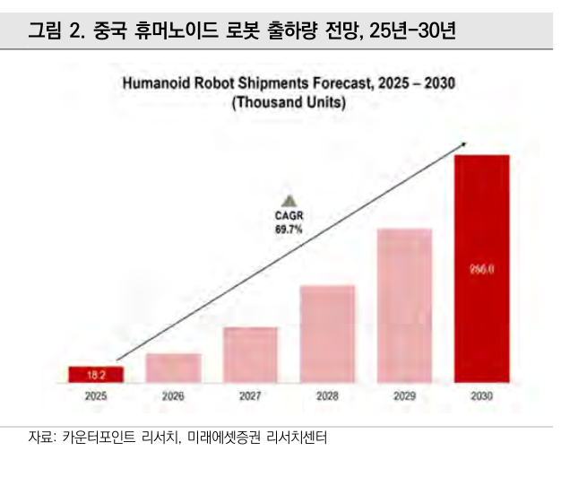
그림 2. 중국 휴머노이드 출하량 전망 25~30년 — 25년 1.82만대 → 30년 25.6만대(CAGR 69.7%). 자료: 카운터포인트 리서치·미래에셋증권" loading="lazy">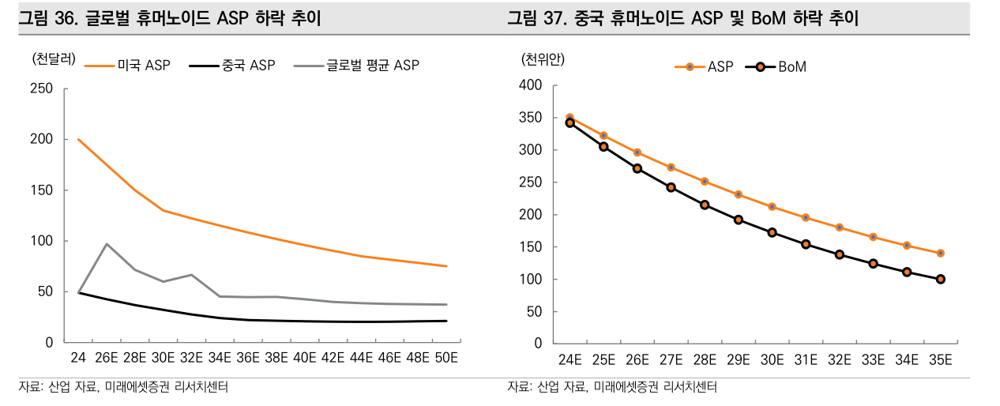
그림 36·37. 글로벌 휴머노이드 ASP 하락(좌: 미국 vs 중국 vs 글로벌 평균) / 중국 ASP·BoM 동반 하락(우). 중국선이 처음부터 아래에 깔려 있고 격차가 유지되는 게 핵심. 자료: 산업 자료·미래에셋증권" loading="lazy">구조 — 두뇌 / 몸체 / 부품의 3분할
미·중 기술 패권 경쟁이 생성형 AI·반도체를 지나 피지컬 AI로 옮겨왔고, 역할이 깔끔하게 갈렸다. 과거 배터리·태양광·드론·디스플레이에서 반복된 "미국이 0→1, 중국이 1→100" 패턴의 재현이다.
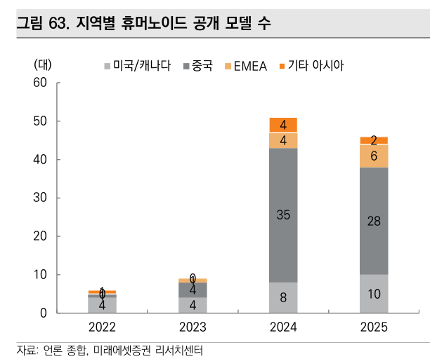
그림 63. 지역별 휴머노이드 공개 모델 수 — 24년 중국 35종 vs 미국·캐나다 8종. 자료: 언론 종합·미래에셋증권" loading="lazy">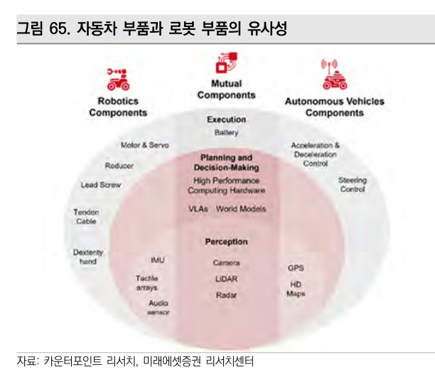
그림 65. 자동차 부품 ∩ 로봇 부품 — 모터·감속기·리드스크류·IMU·라이다가 겹친다. 중국 EV 생태계가 그대로 이식되는 이유. 자료: 카운터포인트 리서치·미래에셋증권" loading="lazy">중국은 이미 이긴 구간 — 그리고 영업레버리지 최초 증명
1H26 글로벌 출하 1.91만대 중 애지봇 44% + 유니트리 31% = 2사가 75%. 중국 기업 합산 97%, 수요조차 중국이 85% 이상. 즉 현재 시장은 중국 내수 순환에 가깝다.
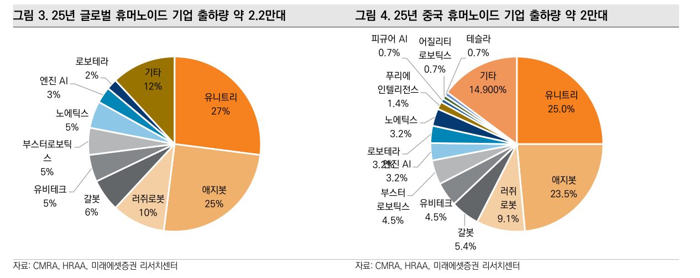
그림 3·4. 25년 글로벌(좌, 약 2.2만대) / 중국(우, 약 2만대) 휴머노이드 기업 출하 점유율. 테슬라·피규어AI·어질리티를 다 합쳐도 2%대다. 자료: CMRA·HRAA·미래에셋증권" loading="lazy">| 중국 OEM | 25년 출하 | 25년 실적 | 다음 단계 |
|---|---|---|---|
| 유니트리 | ~5,500대 | 매출 17억위안(+335%), GPM 59%, 조정순익 5.9억위안 — '양산↑ → 원가↓ → 흑자'를 가장 먼저 입증 | 26.8.19 과창판 상장(A주 1호) |
| 애지봇 | 5,168대 | 출하 세계 1위. AgiBot World 데이터셋(실제 궤적 100만+) 공개 — 하드웨어·데이터·모델 통합 | 26.6 누적 1.5만대, 홍콩 IPO 착수 |
| 유비테크 | 1,079대 | 휴머노이드 매출 0.4 → 8.2억위안(+2,204%), 전사 비중 3%→40%. 25.11 첫 1천대 납품 | 26년 캐파 1만대, 2H27 영업흑전 전망 |
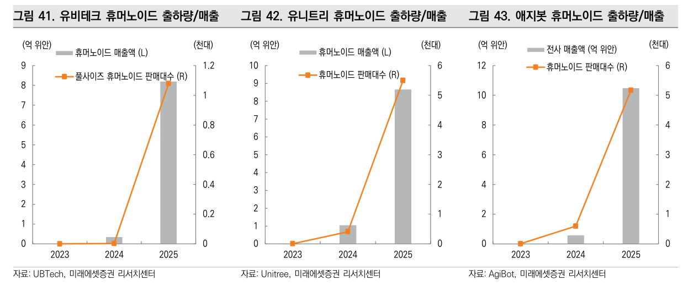
그림 41~43. 유비테크 / 유니트리 / 애지봇 — 출하량(선)과 매출(막대)이 25년에 동시에 꺾여 올라간다. 세 회사가 같은 해 같은 모양이면 개별 이벤트가 아니라 산업 사이클이다. 자료: 각 사·미래에셋증권" loading="lazy">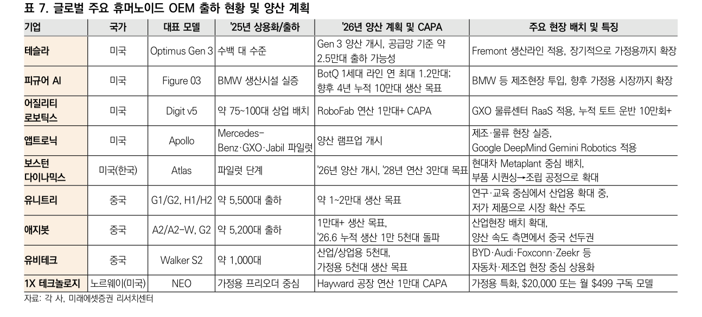
표 7. 글로벌 주요 휴머노이드 OEM 출하 현황 및 26년 양산 계획 — 이 노트에서 가장 자주 다시 볼 표. 미국 칸에는 계획(CAPA)이, 중국 칸에는 실적(출하)이 적혀 있다는 점에 주목. 자료: 각 사·미래에셋증권" loading="lazy">고객도 시연용이 아니다 — 유비테크는 BYD·Zeekr·아우디(자동차), Foxconn(전자), SF Express(물류)에 이어 26년 Airbus까지 PoC 도입. 25년 휴머노이드 주문액 14억위안 돌파.
한국 — 왜 완제품이 아니라 부품인가
논리는 단순하고 검증 가능하다. OEM은 완제품을 팔기 전부터 부품을 반복 구매한다. 프로토타입 제작 → 성능 검증 → PoC → 파일럿 생산의 모든 단계에서 액추에이터·감속기·센서가 소모된다. 즉 부품 수요는 완제품 매출에 선행한다. 게다가 대당 탑재량 자체가 다르다.
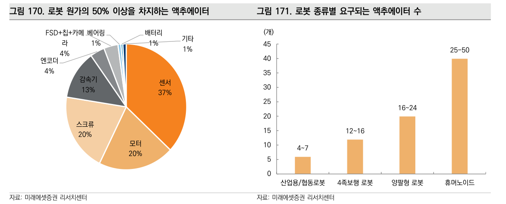
그림 170·171. 로봇 원가 구성(좌) — 센서 37% + 모터 20% + 스크류 20% + 감속기 13%로 구동·감지계가 90%. 폼팩터별 요구 액추에이터 수(우) — 산업용 4~7개 → 휴머노이드 25~50개. 이 두 장이 "부품에 붙어라"의 전부다. 자료: 미래에셋증권" loading="lazy">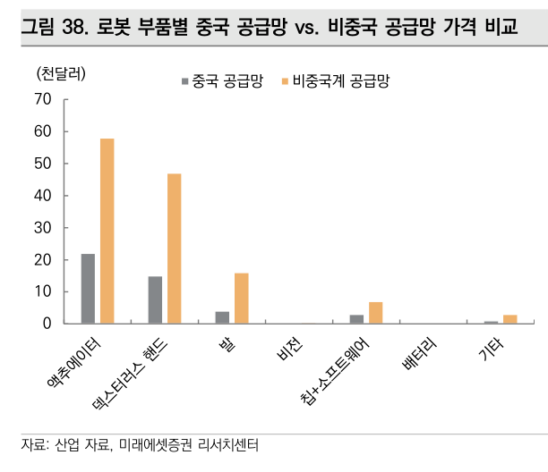
그림 38. 로봇 부품별 중국 vs 비중국 공급망 가격 — 액추에이터 22 vs 58천달러, 덱스터러스 핸드 15 vs 46천달러. 한국 부품사가 마주한 진짜 벽이자, 미국이 규제로만 뚫으려는 이유. 자료: 산업 자료·미래에셋증권" loading="lazy">여기에 두 개의 외부 바람이 겹친다. ① 미국의 대중 규제가 완제품 → 핵심부품으로 확대 (26.6 국방부 1260H에 유니트리 추가, 26.7 FCC가 외국산 첨단로봇 신규 장비 인증 원칙 금지)되면서 비중국 공급망의 가치가 올라간다. ② 국내 대기업이 계열사 제조 현장을 테스트베드로 개방하며 초도 수주가 실제로 발생하고 있다.
| 그룹 | 조직 · 투자 | 휴머노이드 축 |
|---|---|---|
| 삼성 | 대표이사 직속 RX사업추진실(26.7 신설). 구미에 삼성전자+삼성SDS 19조 투자 — 양산 체계 + 데이터팩토리 | 자체 제조 실증 → B2B → B2C 3단계 |
| 현대차 | 보스턴다이내믹스 지분 9.65% 직접 보유 + 소프트뱅크 잔여분 인수 추진. 사업기획 TFT·로보틱스랩 재편 | Atlas — 26년 하반기 현대차·기아 라인 물류 투입, 28년 메타플랜트 연 3만대 목표 |
| LG | CEO 직속 로보틱스사업센터(26.6). 베어로보틱스 51% 자회사 편입, 양재 데이터팩토리 | 로봇용 액추에이터 브랜드 '악시움(AXIUM)' 공개 — 내재화 지향 |
| 정부 | K-휴머노이드 연합 · M.AX 얼라이언스 · 피지컬 AI 글로벌 얼라이언스 | 26년 산업부 AI 예산 중 7,000억을 M.AX 중심 집행 |
커버리지 4종목 — 무엇을 사라고 하는가
| 종목 | TP | 현재가 | 여력 | 타겟 P/S | 핵심 논리 |
|---|---|---|---|---|---|
| 유비테크 9880.HK · Top Pick |
HKD 120 | 85.5 | +40.4% | 9.2× (peer 7.6 +20%) | 26–28F 매출 CAGR 53%(peer 21%). 기존 교육·물류·가정용 로봇이 매출 60%로 캐시카우. 하드+SW+AI 풀스택. 현 주가는 27F P/S 7.1배로 1년 평균 9.4배 대비 할인 |
| 로보티즈 108490 · 차선호 |
356,000 | 267,000 | +33.3% | 42.3× (peer 35.3 +20%) | 25년 수주 44만대 vs 캐파 30만대 → 미출하 22만대가 26~27년으로 이월. 우즈벡 294억 출자(Q시리즈 20만대 + 모터 내재화 → 희토류 리스크 완화). 27F 매출 1,233억·OP 222억(OPM 18%) |
| 에스피지 058610 |
129,000 | 101,500 | +27.1% | 7.3× | 유성·하모닉·싸이클로이드 3종 전부 자체 양산하는 국내 유일. 레인보우로보틱스향 44억(25) → 100억+(26) → 200억+(27). QDD 액추에이터 'SDD' 하반기 양산. 미국 기어드모터 업체의 중국산 대체 수요가 본업에 붙음 |
| 에스비비테크 389500 |
47,000 | 37,300 | +26.0% | 15.1× | 하모닉 감속기 국산화 1호(일본 HDS 대비 판가 70%·납기 1/4). 25.10 이후 신규 감속기 공급계약 44.2억 = 25년 매출의 61%(휴머노이드용 22.8억 포함). 베어링 90%가 반도체향 — TSMC 첫 납품(15억) |
중국 부품 공급망에 대해서는 개별 종목이 아니라 TIGER 차이나 휴머노이드로봇 ETF(0053L0) 분산을 권고 — "특정 OEM의 승패가 아니라 중국 전체 생산량 확대에 투자"하라는 논리. 다만 이건 집중 스타일과는 맞지 않는 처방이다.
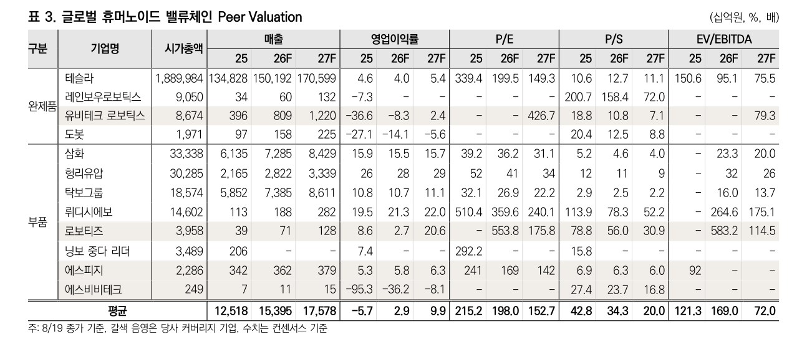
표 3. 글로벌 휴머노이드 밸류체인 Peer Valuation (8/19 종가) — 27F P/S 평균 20.0배. 로보티즈 30.9 / 에스비비테크 16.8 / 레인보우로보틱스 158.4배. P/E 칸이 대부분 비어 있다는 사실 자체가 이 섹터의 상태다. 자료: Bloomberg·에프앤가이드·미래에셋증권" loading="lazy">이 보고서를 액면 그대로 믿으면 안 되는 이유
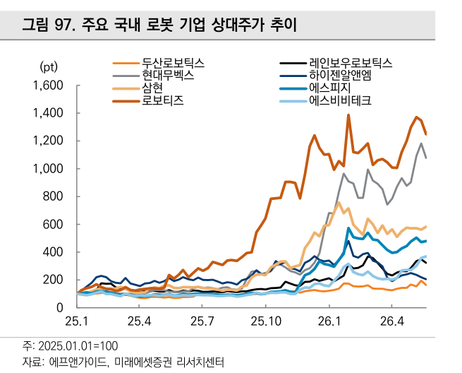
그림 97. 국내 주요 로봇 기업 상대주가 (25.01.01=100). 자료: 에프앤가이드·미래에셋증권" loading="lazy">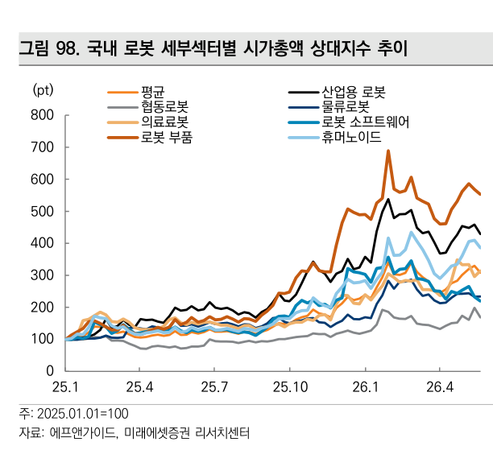
그림 98. 국내 로봇 세부섹터별 시총 상대지수 — 로봇 부품이 26.1 고점까지 전 섹터를 압도했다. 즉 "부품에 붙어라"는 이미 시장이 먼저 반영했다." loading="lazy">타임라인 — 2차 변곡점까지
판정 · 트리거
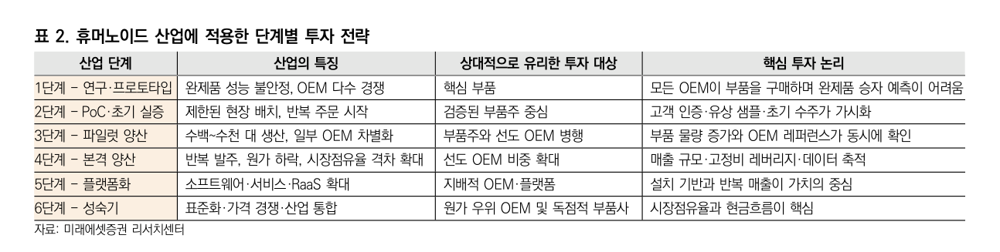
표 2. 휴머노이드 산업 단계별 투자 전략 — 지금 위치를 판정하는 자(尺). 중국 선도 OEM은 3~4단계(파일럿→본격 양산), 한국은 1~2단계(연구·프로토타입→PoC). 1~2단계의 처방은 "핵심 부품 / 검증된 부품주"이고, "선도 OEM 비중 확대"는 4단계부터다. 자료: 미래에셋증권" loading="lazy">